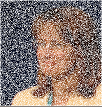
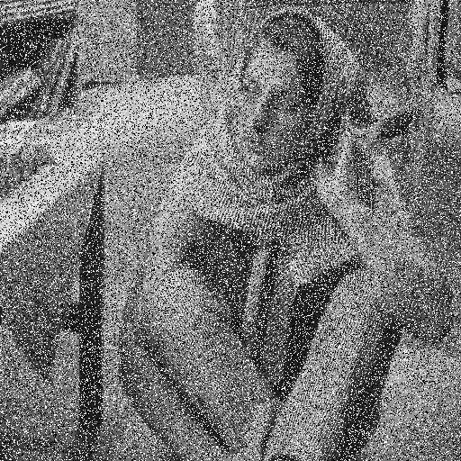
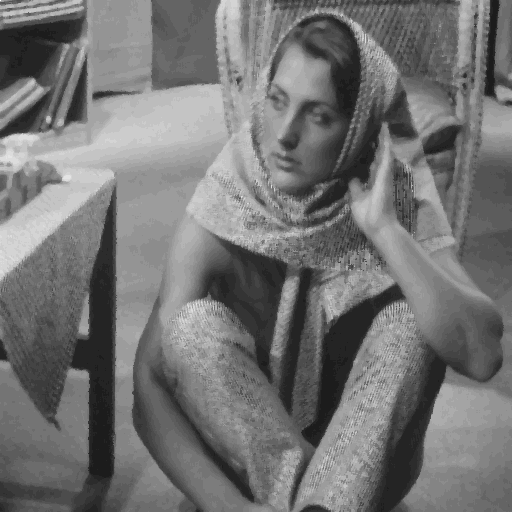
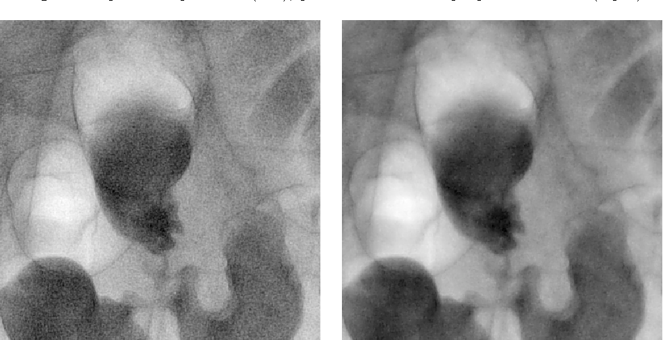
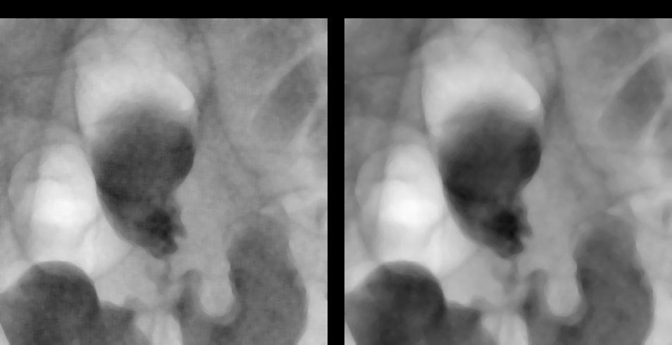

Building a Median Filter
Median filters are meant to reduce the noise in an image. They take noise and filter them out by grabbing the median value from surrounding pixel values and setting each pixel to that value. In my median filter, I check the available neighbors around a pixel and I grab the median. I intentionally exclude full white or full black pixels in order to make the final product clean. This is problematic. X-rays, for example, are largely white or black and – therefore – my algorithm destroys them. But the end product of most color or black and white images are far more beautiful thanks to that little hack.
Lets see the code first.
def rgb_basic_median(img, pixel, bound=4): height, width = img.shape[0], img.shape[1] # get starting pixels indices row_start = pixel[0] - bound row_bound = pixel[0] + bound col_start = pixel[1] - bound col_bound = pixel[1] + bound # tracks the pixels we're averaging over r = [0] g = [0] b = [0] # scan for row_index in range(row_start, row_bound): for col_index in range(col_start, col_bound): if row_index >= 0 and row_index < height and col_index>= 0 and col_index < width: R,G,B=img[row_index][col_index] if (R==255 and G==255 and B==255) or (R==0 and G==0 and B==0): continue r.append(R) g.append(G) b.append(B) r.sort() g.sort() b.sort() R = r[len(r) // 2] G = g[len(g) // 2] B = b[len(b) // 2] return [R, G, B]
I know it's a lot. Just focus on one pixel at first. This is the basic process in human readable form.
- Get your pixel coordinates in your 2D image array (eg. (5, 5))
- You grab the bounding box around that coordinate. If we want a bounding box with a length of 2, we will have the starting coordinates (3, 3) and the ending coordinates (7, 7)
- Now, you want to iterate over each pixel in the square (3, 3) -> (7, 7). From top left to bottom right of the grid.
- Store each pixel's R, G, and B values in a separate array.
- After you've stored all the pixels in each array, sort them by their values.
- Grab the median (the middle one) from your sorted arrays.
- Those three R, G, B values are your (5, 5) pixel's new value.
Just do that for every pixel in the array (making sure to not make any index out-of-bounds errors. Then save that array to a new image.
Examples
Here are some example images from my attempts thus far. I am doing the hacky job of ignoring pure white or pure black pixels. This allows me a complete image (no holes). So, my median filter is more like a median sieve. I don't allow the known noise (white) to permeate through. This actually works for most images, but I'll discuss and show the issues with this method later...
 
Here is an X-ray which has a sample filter already being used on the right-hand side. I just ran the whole image through my median filter to see the impact and compare.
Before:
After:
The results were suprisingly better than I thought. The X-ray image looks better (I think)? But I certainly wouldn't trust my methods in a doctor's office! I'm definitely losing those curved black lines (veins, I think) and my shadows are blending together. From what I understand with X-rays, that's a really bad thing. Shadows are the key and blurring them to the extent that my algorithm + window size did is bad news. Still, it looks prettier!
Thoughts
Median filters are a really great tool for giving us the illusion of fixing lost data in an image. However, we are not truly creating new data! Median filters are a lossy procedure. We lose information. For example, in the case where we have a lot of good, healthy, pixels, in an area, we're overwriting that data with the median of the surrounding area. We're losing data on healthy pixels as well as unhealthy ones! We could, in theory, only replace pixels that are considered bad. We can do that if we know that the image is going to have many white or black pixels that represent lost data. If the pixel is white or black, we run the median filter algorithm on it. If not, we just keep the existing value inside it.
Looks a lot cleaner in my opinion! I had to actually check if the RGB channel was above 220 instead of pure white because some of the noise was not pure white. These kinds of manual decisions being applied to each image give me an unfair advantage over a generic implementation of the median filter algorithm.
However
I believe the decisions I'm making are capable of being algorithmically decided through machine learning or simple statistics. For example, if we could scan our image ahead of time (expensive) looking for a gaussian distribution of a color channel (eg. white appears in a random way), we could then decide to avoid white when filtering the image (as I did in my examples). The great part about image algorithms is humans fill in the gaps quite easily. A blurred image can appear more in focus than it really is because our eyes fill in the details we expect to see.